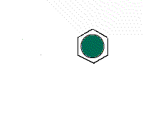
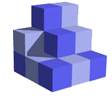

Chapter 13—Solids and Modern Materials
Powerpoint notes for chapter 13.
2D Unit Cells
Unit cells are blocks that can be used to "stamp out" or build a crystal structure. Just in the same way that bricks can be stacked to build a wall, unit cells can be stacked to build a crystal.
2D unit cells are simpler to imagine, so let's start here.
Below is an animation of a 2D unit cell containing a single lattice point, perhaps corresponding to a (2-dimensional) atom. Watch what happens as we replicate the unit cell:
It is possible to have a hexagonal unit cell in 2-D. Watch as the unit cell is replicated to construct the crystal. Note that there are no gaps left between the cells.

3D Unit Cells
In three dimensions, unit cells can come in seven basic shapes. Any other shape would leave a gap as we stacked the unit cells one on top of the other.
The two most common shapes of cells (for a chemist) are the cubic and hexagonal ones. Look below to see what happens as we stack them.

Simple Cubic Unit Cell
This unit cell consists of lattice points at each of the eight corners of the cell. If an atom is located at each lattice point, then only ⅛ of each atom appears inside the cell at each corner. Overall, this unit cell contains only one lattice point.

Body Centered Cubic Unit Cell
This unit cell consists of lattice points at each corner, as well as one in the center of the cell. Overall, this unit cell contains two lattice points.
Face Centered Cubic Unit Cell
This unit cell consists of lattice points at each corner, as well as one in the center of each edge. Overall, this unit cell contains four lattice points.
Reading material
- Happy birthday, buckyballs! (NPR)
Celebrating the 1985 discovery of a new allotrope of carbon: the buckyball.
- Nobel Awarded For Thin, Versatile Carbon Material (NPR)
The 2010 Nobel Prize in physics went to researchers investigating the surprising properties of graphene, an allotrope of carbon!